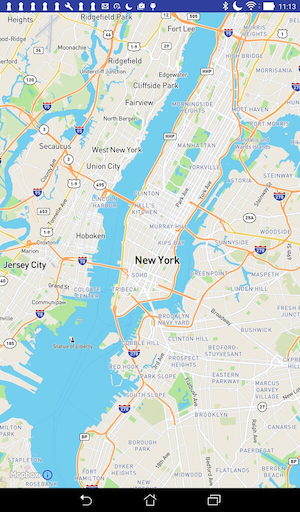

Embedded Map & Orientation
In a previous lab our MyRent app consumed a GoogleMap API. Here we provide an alternative mapping system provided by MapBox. This is based on the open source OpenStreetMap project. This approach has the advantage of providing greater flexibility, not requiring keys and, importantly, resulting in a significantly smaller release build.
Introduction
In a previous lab our MyRent app consumed a GoogleMap API. Here we provide an alternative mapping system provided by MapBox. This is based on the open source OpenStreetMap project. This approach is interesting for a number of reasons. We are not obliged to undergo the somewhat laborious process of obtaining keys. For our purposes a simple token suffices. The API provided by MapBox is quite easy to use. And the method reference count in the signed release build for this iteration of MyRent is significantly less than that generated when using GoogleMaps. For example, presently, the MyRent release apk breaches the 64k method reference limit whereas using MapBox results in a method reference count in the order of 42k.
OpenStreetMap (OSM) is an open source project to create a free editable world map. The project was founded by Stev Coast in 2004 and has experienced growing usage. According to the referenced Wikipedia article, presently there are over two million registered users.
The OSM licence was originally published under the Creative Commons Attribution-ShareAlike licence but has since changed to the Open Database Licence (ODbL).
The approach taken in this lab is to continue from the end of the previous lab and replace GoogleMap with the MapBox version. It is suggested that you provide suitable tags or branches to facilite recovery of the Google Maps state should you require.
Before proceeding, create an account (free - no credit card required) with MapBox.
- Once registered, switch to the studio page and copy your default access token. This will be required in a later step.

Setup
Gradle
Delete reference to Google Play Services (something similar to the following):
compile 'com.google.android.gms:play-services:9.2.1'and introduce in its place the MapBox dependency:
compile ('com.mapbox.mapboxsdk:mapbox-android-sdk:4.1.1@aar'){
transitive=true
}Remove GoogleMaps Code
Delete these files:
- MapActivity in activities package.
- activity_map.xml in res/layout package.
- replace MapHelper content in android.helpers package with the following. Study the code and observe the differences between it and the original material.
package org.wit.android.helpers;
import android.util.Log;
import com.mapbox.mapboxsdk.geometry.LatLng;
import java.lang.NumberFormatException;
public class MapHelper
{
/**
* Parses a string containing latitude and longitude.
* @param geolocation The string obtained by concatenating comma separated latitude and longitude
* @return The latitude component
*/
public static double latitude(String geolocation) {
String[] g = geolocation.split(",");
try {
if (g.length == 2) {
return Double.parseDouble(g[0]);
}
}
catch (NumberFormatException e) {
Log.d("MapHelper", "Number format exception: invalid latitude: " + e.getMessage());
}
return 0.0;
}
/**
* Parses a string containing latitude and longitude.
* @param geolocation The string obtained by concatenating comma separated latitude and longitude
* @return The longitude component
*/
public static double longitude(String geolocation) {
String[] g = geolocation.split(",");
try {
if (g.length == 2) {
return Double.parseDouble(g[1]);
}
}
catch (NumberFormatException e) {
Log.d("MapHelper", "Number format exception: invalid longitude: " + e.getMessage());
}
return 0.0;
}
/**
*
* @param geo A Mapbox LatLng object representing geolocation
* @return String Returns concatenated latitude and longitude.
*/
public static String latLng(LatLng geo) {
return String.format("%.6f", geo.getLatitude()) + ", " + String.format("%.6f", geo.getLongitude());
}
}Layout
Add a default MapBox layout file named activity_mapbox.xml in res/layout folder:
<RelativeLayout xmlns:android="http://schemas.android.com/apk/res/android"
xmlns:tools="http://schemas.android.com/tools"
xmlns:mapbox="http://schemas.android.com/apk/res-auto"
android:layout_width="match_parent"
android:layout_height="match_parent"
tools:context=".activities.MapBoxActivity">
<!-- Set the starting camera position and map style using xml-->
<com.mapbox.mapboxsdk.maps.MapView
android:id="@+id/mapView"
android:layout_width="match_parent"
android:layout_height="match_parent"
mapbox:style_url="mapbox://styles/mapbox/streets-v9"
mapbox:center_latitude="40.73581"
mapbox:center_longitude="-73.99155"
mapbox:zoom="11"/>
</RelativeLayout>MapBox activity
Add an activity MapBoxActivity to the activities package, locating your token in the placeholder your token.
package org.wit.myrent.activities;
import android.app.Activity;
import android.os.Bundle;
import com.mapbox.mapboxsdk.maps.MapView;
import com.mapbox.mapboxsdk.maps.MapboxMap;
import com.mapbox.mapboxsdk.maps.OnMapReadyCallback;
import com.mapbox.mapboxsdk.MapboxAccountManager;
import org.wit.myrent.R;
public class MapBoxActivity extends Activity {
private MapView mapView;
@Override
protected void onCreate(Bundle savedInstanceState) {
super.onCreate(savedInstanceState);
// Mapbox access token only needs to be configured once in your app
MapboxAccountManager.start(this, "your token");
// This contains the MapView in XML and needs to be called after the account manager
setContentView(R.layout.activity_mapbox);
mapView = (MapView) findViewById(R.id.mapView);
mapView.onCreate(savedInstanceState);
mapView.getMapAsync(new OnMapReadyCallback() {
@Override
public void onMapReady(MapboxMap mapboxMap) {
// Customize map with markers, polylines, etc.
}
});
}
// Add the mapView lifecycle to the activity's lifecycle methods
@Override
public void onResume() {
super.onResume();
mapView.onResume();
}
@Override
public void onPause() {
super.onPause();
mapView.onPause();
}
@Override
public void onLowMemory() {
super.onLowMemory();
mapView.onLowMemory();
}
@Override
protected void onDestroy() {
super.onDestroy();
mapView.onDestroy();
}
@Override
protected void onSaveInstanceState(Bundle outState) {
super.onSaveInstanceState(outState);
mapView.onSaveInstanceState(outState);
}
}Manifest
Delete the MapActivity node.
These permissions are required.
<uses-permission android:name="android.permission.ACCESS_NETWORK_STATE" />
<uses-permission android:name="android.permission.ACCESS_COARSE_LOCATION" />
<uses-permission android:name="android.permission.ACCESS_FINE_LOCATION" />
<uses-permission android:name="android.permission.READ_CONTACTS" />
<uses-permission android:name="android.permission.INTERNET" />Add a MapBoxActivity node:
<activity
android:name=".activities.MapBoxActivity"
android:label="@string/app_name">
<meta-data android:name="android.support.PARENT_ACTIVITY"
android:value=".activities.ResidencePagerActivity"/>
</activity>Add telemetry service:
<service android:name="com.mapbox.mapboxsdk.telemetry.TelemetryService" />ResidenceFragment
In ResidenceFragment.onClick replace the code relating to the now deleted Google map activity with the following:
case R.id.fab:
//startActivityWithData(getActivity(), MapActivity.class, EXTRA_RESIDENCE_ID, residence.id); // <--- delete this line
startActivityWithData(getActivity(), MapBoxActivity.class, EXTRA_RESIDENCE_ID, residence.id);
break;Build, install apk on a device or emulator. Open a residence detail view and click on the floating action button. You should be presented with the default MapBox map as shown in Figure 1.

Customize map
First remove the default location (latitude:longitude) from the layout. This now becomes:
<RelativeLayout xmlns:android="http://schemas.android.com/apk/res/android"
xmlns:tools="http://schemas.android.com/tools"
xmlns:mapbox="http://schemas.android.com/apk/res-auto"
android:layout_width="match_parent"
android:layout_height="match_parent"
tools:context=".activities.MapBoxActivity">
<!-- The starting camera position will be set programmatically in java -->
<com.mapbox.mapboxsdk.maps.MapView
android:id="@+id/mapView"
android:layout_width="match_parent"
android:layout_height="match_parent"
mapbox:style_url="mapbox://styles/mapbox/streets-v9"/>
</RelativeLayout>An anonymous class is used to set the map listener. We shall replace this with the delegate or interface pattern with which we are by now no doubt well familiar.
Replace:
mapView.getMapAsync(new OnMapReadyCallback() {
@Override
public void onMapReady(MapboxMap mapboxMap) {
// Customize map with markers, polylines, etc.
}
});with:
mapView.getMapAsync(this);Implement OnMapReadyCallback interface. The class header then becomes:
public class MapBoxActivity extends Activity implements OnMapReadyCallbackImplement OnMapReadyCallback abstract method:
// OnMapReadyCallback interface method impl
@Override
public void onMapReady(MapboxMap mapboxMap) {
// TODO: map customization
}The code should now be error free.
In the next step we shall centre the map on the current residence geolocation.
Residence geolocation
To centre the map on the residence geolocation requires the following steps:
- Obtain the current residence id from the fragment bundle.
- Use the id to obtain a reference to the residence and thence its geolocation.
- Centre the map on this geolocation.
We are about to make several additions in this step. To avoid a proliferation of errors it is best to add all the necessary imports now:
import android.support.annotation.NonNull;
import com.mapbox.mapboxsdk.annotations.MarkerViewOptions;
import com.mapbox.mapboxsdk.camera.CameraPosition;
import com.mapbox.mapboxsdk.camera.CameraUpdateFactory;
import com.mapbox.mapboxsdk.geometry.LatLng;
import org.wit.android.helpers.MapHelper;
import org.wit.myrent.app.MyRentApp;
import org.wit.myrent.models.Residence;Introduce these fields:
private MapboxMap mapboxMap;
Long resId; // The id of the residence associate with this map pane
Residence residence; // The residence associated with this map pane
LatLng residenceLatLng;
MyRentApp app;In onCreate initializeresId,residenceandresidenceLatLng`:
resId = (Long) getIntent().getSerializableExtra(ResidenceFragment.EXTRA_RESIDENCE_ID);
app = (MyRentApp) getApplication();
residence = app.portfolio.getResidence(resId);
if (residence != null) {
residenceLatLng = new LatLng(MapHelper.latitude(residence.geolocation),
MapHelper.longitude(residence.geolocation));
}Create a private method setMarker. This instantiates a marker and adds it to the map.
private void setMarker() {
MarkerViewOptions marker = new MarkerViewOptions().position(residenceLatLng);
mapboxMap.addMarker(marker);
}Create a private method to position the map camera. This method uses the residenceLatLng reference together with the incoming residence zoom value in positioning the camera.
private void positionCamera() {
CameraPosition position = new CameraPosition.Builder()
.target(residenceLatLng) // Sets the new camera position
.zoom(residence.zoom) // Sets the zoom
.build(); // Creates a CameraPosition from the builder
mapboxMap.animateCamera(CameraUpdateFactory
.newCameraPosition(position));
}We are now in a position to implement the customization to onMapReady:
// OnMapReadyCallback interface method impl
@Override
public void onMapReady(MapboxMap mapboxMap) {
this.mapboxMap = mapboxMap;
positionCamera();
setMarker();
}Test the app as before. The output should now resemble that in Figure 1.

Marker
Here we shall:
- implement an interface to facilite adding an infowindow to the marker to that when clicked it displays its geolocation.
- implement an interface so that a long press on any position on the map causes the marker to move to that position.
- update the model state.
OnMarkerClickListener
The MapBoxActivity class header becomes:
public class MapBoxActivity extends AppCompatActivity implements
OnMapReadyCallback,
MapboxMap.OnMarkerClickListenerRegister the listener in onMapReady:
mapboxMap.setOnMarkerClickListener(this);Here is the interface method, fully implemented:
// OnMarkerClickListener
@Override
public boolean onMarkerClick(@NonNull Marker marker) {
String snippet = "GPS : " + residence.geolocation;
marker.setSnippet(snippet);
return false;
}OnMapLongClickListener
The class header now becomes:
public class MapBoxActivity extends AppCompatActivity implements
OnMapReadyCallback,
MapboxMap.OnMarkerClickListener,
MapboxMap.OnMapLongClickListenerRegister the listener:
mapboxMap.setOnMapLongClickListener(this);Here is the interface method implementation:
/**
* Long click moves marker to clicked position and updates
* Residence object's geolocation to new marker position.
* @param point
*/
// OnMapLonClickListener
@Override
public void onMapLongClick(@NonNull LatLng point) {
residenceMarker.setPosition(point);
}Persistence
Save the residence state changes in the onPause method:
- its zoom level
- its geolocation
@Override
public void onPause() {
super.onPause();
mapView.onPause();
residence.zoom = mapboxMap.getCameraPosition().zoom;
residence.geolocation = MapHelper.latLng(residenceMarker.getPosition());
app.portfolio.updateResidence(residence);
}MapBoxActivity
For reference, here is the complete class.
Observe that we have:
- enabled the support action bar and programmed the up button.
- enabled the zoom controls.
package org.wit.myrent.activities;
import android.app.Activity;
import android.os.Bundle;
import android.support.annotation.NonNull;
import android.support.v7.app.AppCompatActivity;
import android.view.MenuItem;
import com.mapbox.mapboxsdk.annotations.Marker;
import com.mapbox.mapboxsdk.annotations.MarkerViewOptions;
import com.mapbox.mapboxsdk.camera.CameraPosition;
import com.mapbox.mapboxsdk.camera.CameraUpdateFactory;
import com.mapbox.mapboxsdk.geometry.LatLng;
import com.mapbox.mapboxsdk.maps.MapView;
import com.mapbox.mapboxsdk.maps.MapboxMap;
import com.mapbox.mapboxsdk.maps.OnMapReadyCallback;
import com.mapbox.mapboxsdk.MapboxAccountManager;
import org.wit.android.helpers.MapHelper;
import org.wit.myrent.R;
import org.wit.myrent.app.MyRentApp;
import org.wit.myrent.models.Residence;
import static org.wit.android.helpers.IntentHelper.navigateUp;
public class MapBoxActivity extends AppCompatActivity implements
OnMapReadyCallback,
MapboxMap.OnMarkerClickListener,
MapboxMap.OnMapLongClickListener
{
private MapView mapView;
private MapboxMap mapboxMap;
private Marker residenceMarker;
Long resId; // The id of the residence associate with this map pane
Residence residence; // The residence associated with this map pane
LatLng residenceLatLng;
MyRentApp app;
@Override
protected void onCreate(Bundle savedInstanceState) {
super.onCreate(savedInstanceState);
resId = (Long) getIntent().getSerializableExtra(ResidenceFragment.EXTRA_RESIDENCE_ID);
getSupportActionBar().setDisplayHomeAsUpEnabled(true);
app = (MyRentApp) getApplication();
residence = app.portfolio.getResidence(resId);
if (residence != null) {
residenceLatLng = new LatLng(MapHelper.latitude(residence.geolocation),
MapHelper.longitude(residence.geolocation));
}
// Mapbox access token only needs to be configured once in your app
MapboxAccountManager.start(this, "your token");
// This contains the MapView in XML and needs to be called after the account manager
setContentView(R.layout.activity_mapbox);
mapView = (MapView) findViewById(R.id.mapView);
mapView.onCreate(savedInstanceState);
mapView.getMapAsync(this);
}
@Override
public boolean onOptionsItemSelected(MenuItem item)
{
switch (item.getItemId())
{
case android.R.id.home:
navigateUp(this, ResidenceFragment.EXTRA_RESIDENCE_ID, resId);
return true;
default: return super.onOptionsItemSelected(item);
}
}
// OnMapReadyCallback interface method impl
@Override
public void onMapReady(MapboxMap mapboxMap) {
this.mapboxMap = mapboxMap;
positionCamera();
setMarker();
mapboxMap.getUiSettings().setZoomControlsEnabled(true);
mapboxMap.getUiSettings().setZoomGesturesEnabled(true);
mapboxMap.setOnMarkerClickListener(this);
mapboxMap.setOnMapLongClickListener(this);
}
private void setMarker() {
MarkerViewOptions marker = new MarkerViewOptions().position(residenceLatLng);
residenceMarker = mapboxMap.addMarker(marker);
}
private void positionCamera() {
CameraPosition position = new CameraPosition.Builder()
.target(residenceLatLng) // Sets the new camera position
.zoom(residence.zoom)
.build(); // Creates a CameraPosition from the builder
mapboxMap.animateCamera(CameraUpdateFactory
.newCameraPosition(position));
}
// Add the mapView lifecycle to the activity's lifecycle methods
@Override
public void onResume() {
super.onResume();
mapView.onResume();
}
@Override
public void onPause() {
super.onPause();
mapView.onPause();
residence.zoom = mapboxMap.getCameraPosition().zoom;
residence.geolocation = MapHelper.latLng(residenceMarker.getPosition());
app.portfolio.updateResidence(residence);
}
@Override
public void onLowMemory() {
super.onLowMemory();
mapView.onLowMemory();
}
@Override
protected void onDestroy() {
super.onDestroy();
mapView.onDestroy();
}
@Override
protected void onSaveInstanceState(Bundle outState) {
super.onSaveInstanceState(outState);
mapView.onSaveInstanceState(outState);
}
// OnMarkerClickListener
@Override
public boolean onMarkerClick(@NonNull Marker marker) {
String snippet = "GPS : " + residence.geolocation;
marker.setSnippet(snippet);
return false;
}
/**
* Long click moves marker to clicked position and updates
* Residence object's geolocation to new marker position.
* @param point
*/
// OnMapLonClickListener
@Override
public void onMapLongClick(@NonNull LatLng point) {
residenceMarker.setPosition(point);
}
}The application at the end of this lab is available for reference here: myrent-11a